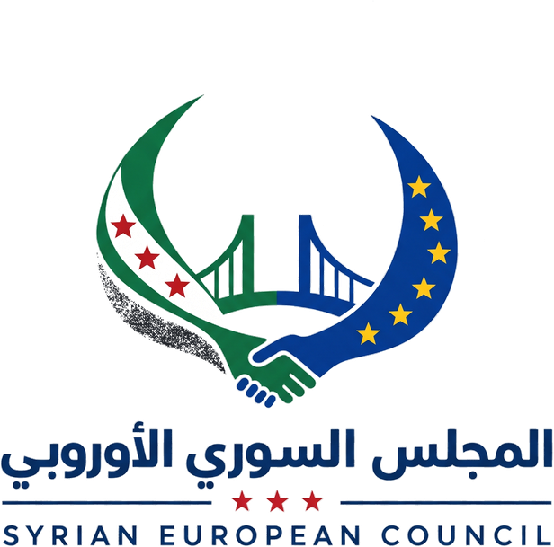
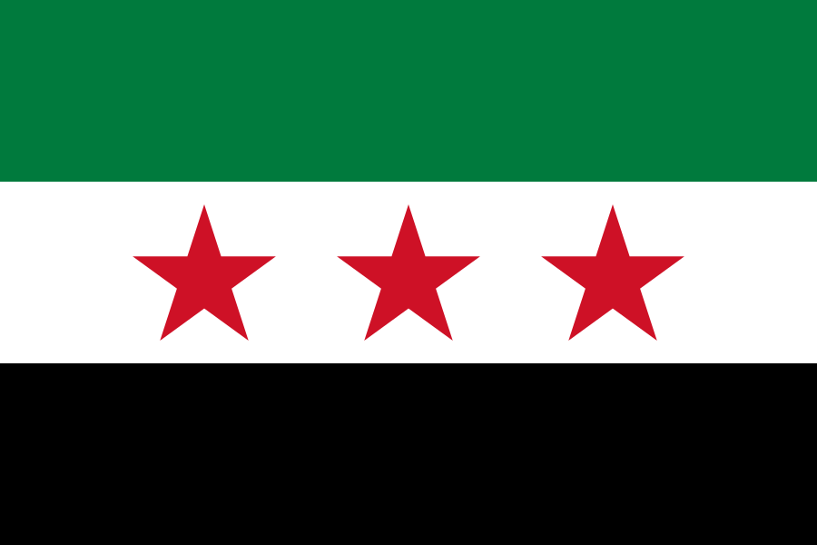

تنسيق الشبكات والمبادرات
تعزيز التواصل والثقة بين الكفاءات والمبادرات السورية في أوروبا، وتسهيل العمل حول أولويات مشتركة من دون إلغاء استقلال أي طرف.
خرائط خبرات · لقاءات قطاعية · إحالات وشراكات
Syria EuropeCouncil

تنطلق من بلجيكا نحو أوروبا
إطار مستقل لتنسيق المعرفة والمبادرات والشراكات بين السوريين في أوروبا والجهات الأوروبية المهتمة ببناء تعاون عملي ومستدام مع سوريا.
From expertise to impact
المجلس السوري الأوروبي
أطلق فريق من السوريين والسوريات ذوي الخبرة والكفاءة في أوروبا Syria Europe Council كمبادرة مستقلة قيد التطوير. تنطلق من بلجيكا برؤية أوروبية، وتعمل على تحويل المعرفة والعلاقات والفرص المتاحة إلى تعاون ومشاريع ذات أثر.
لا يدّعي المجلس تمثيل السوريين ولا يحل محل المبادرات القائمة. دوره المقترح هو التيسير والتنسيق: بناء الثقة، تقليل تشتت الجهود، وصل الخبرات بالاحتياجات، وتهيئة بيئة مناسبة لشراكات متوازنة.
عن المبادرة
بلجيكامبادرة مجتمعية مستقلة تعمل على تعزيز التواصل والثقة، وتيسير التنسيق والتعاون بين الشخصيات والكفاءات والجمعيات والمبادرات السورية في بلجيكا، مع احترام تنوعها واستقلاليتها.
إذا كنت شخصاً، أو كنتم مجموعة سورية تمثّل شريحة من السوريين، وترغبون في المشاركة معنا، فيُرجى التواصل عبر البريد الإلكتروني: info@syriaeuropecouncil.eu
الأعضاء والمستشارون
سبعة أعضاء وأربعة مستشارين من أصحاب الخبرة والكفاءة، يعملون في هذه المرحلة على بناء إطار تنسيقي مسؤول وتطوير آليات المشاركة والحوكمة.
ماذا نفعل؟
نبدأ بأنشطة مركزة وقابلة للقياس، ونطوّرها بالتعاون مع الأفراد والمبادرات والمؤسسات المعنية.
تعزيز التواصل والثقة بين الكفاءات والمبادرات السورية في أوروبا، وتسهيل العمل حول أولويات مشتركة من دون إلغاء استقلال أي طرف.
خرائط خبرات · لقاءات قطاعية · إحالات وشراكاتربط فرص الاستثمار والمشاريع في سوريا بمستثمرين وشركات وخبراء في أوروبا، وتطوير حوار واقعي حول الاحتياجات والمخاطر ومتطلبات التنفيذ.
تعريف بالفرص · لقاءات أعمال · خبرة قطاعيةالخبرة: خبيرة مظهر وإتيكيت ومصممة أزياء.
الموقع: دوسلدورف – ألمانيا.
تيسير نقل الخبرات الأوروبية في الإدارة والحوكمة والتقنية والتخطيط والخدمات العامة، عبر أفراد وشركات وجامعات ومنظمات ومؤسسات.
تبادل خبراء · برامج إرشاد · أدلة وممارساتالخبرة: مهندس معماري ذو خبرة واسعة في بحوث إعادة الإعمار.
الجهة والموقع: Om-architecte · بلجيكا.
دعم الشمول والتنوع والتبادل الثقافي وبناء القدرات، ومواجهة الصور النمطية عبر مبادرات محلية تعود بالفائدة على المجتمع بأكمله.
حوارات مجتمعية · تمكين · تبادل ثقافيتيسير الوصول إلى المعلومات والفرص التعليمية للشباب والطلبة، من فهم القبول الجامعي واختيار التخصص إلى معادلة الشهادات وبناء شبكات الإرشاد.
إرشاد طلابي · توجيه مهني · فرص دعمالخبرة: تعليم العربية والإنجليزية، ودعم الأطفال في النطق والتنمية الفكرية، ودعم المرأة السورية وتنمية قدراتها ودعمها نفسياً واجتماعياً.
الموقع: بلجيكا – مقاطعة لييج – ڤيرفييه.
الخبرة: مبادرات في التعليم والبحث عن عمل والملف السياسي.
الموقع: أنتويرب – بلجيكا.
لمن هذه المنصة؟
يبنى المجلس حول مساهمات متنوعة، من بلجيكا ثم من مختلف الدول الأوروبية.
«من أوروبا إلى سوريا، ومن الخبرة إلى الأثر.»
— Syria Europe Councilكيف يبدو ذلك عملياً؟
هذه أمثلة توضيحية للمرحلة التجريبية وليست برامج معلنة أو التزامات نهائية.
شبكات الخبرة
لقاء يجمع مهندسين سوريين في بلجيكا وهولندا مع شركة أوروبية وجامعة، لرصد الاحتياجات وتبادل حلول الطاقة اللامركزية القابلة للتطبيق.
مذكرة معرفة وفريق اتصال لمشروع تجريبي.
استثمار مسؤول
عرض منظم لفرص وسلاسل توريد واحتياجات تشغيلية أمام رواد أعمال ومستثمرين، مع خبراء قانونيين وماليين لفهم المتطلبات والمخاطر.
إحالات موثوقة وخارطة خطوات أولية.
نقل المعرفة
تبادل بين خبرات بلدية أوروبية وممارسين سوريين حول التخطيط التشاركي، إدارة الخدمات، الشفافية وقياس رضا السكان.
جلسات تطبيقية ودليل ممارسات مختصر.
تماسك اجتماعي
تعاون بين شباب ومؤسسات ثقافية محلية لإنتاج فعاليات وقصص تسهم في كسر الصور النمطية وتعزيز المشاركة والانتماء.
فعالية مشتركة وحملة محتوى محلية.
تعليم وتمكين الشباب
لقاء عملي يشرح آليات القبول الجامعي، اختيار مجال الدراسة، معادلة الشهادات، وخيارات الدعم المتاحة، بمشاركة طلاب وخبراء ومهتمين.
دليل مختصر وشبكة إرشاد أولية للطلبة.

منهجية العمل
نفهم السياق والأطراف والهدف والقيود قبل اقتراح أي نشاط.
نقرّب الأشخاص والجهات الأنسب حول فرصة واضحة.
نحدد نطاقاً ومخرجات ومسؤوليات قابلة للتنفيذ.
نوثق النتائج والدروس ونبني على ما يثبت نجاحه.
مرتكزاتنا
أسئلة شائعة
نحدّث هذه الإجابات مع تطور النسخة التجريبية وملاحظات الفريق.
لا. المجلس مبادرة مستقلة للتنسيق والتيسير ولا يدّعي تمثيل السوريين أو التحدث باسمهم. نجاحه يعتمد على الانفتاح والتعاون واحترام استقلال المشاركين والمبادرات.
توفّر بلجيكا بيئة مناسبة للانطلاق لوجود كفاءات ومبادرات سورية، وقربها من مؤسسات أوروبية وشبكات أعمال ومجتمع مدني. الرؤية منذ البداية أوروبية وقابلة للتوسع التدريجي.
لا. الدور المقترح هو تسهيل الوصول إلى المعرفة والعلاقات وفرص التعاون. أي قرار استثماري أو قانوني أو مالي يبقى مسؤولية الأطراف المعنية وبعد إجراءات التحقق اللازمة.
يمكن إرسال الخبرة أو الفكرة أو الحاجة أو فرصة الشراكة عبر النموذج أدناه. خلال المرحلة التجريبية سنجمع المدخلات ونحدد مجالات البداية والشركاء المحتملين.
الأمثلة الحالية توضح نوع العمل الذي يمكن للمجلس تطويره. هذه نسخة تجريبية لجمع الملاحظات، وسيتم الإعلان بوضوح عن أي برنامج أو فعالية بعد اعتمادها.
تواصل معنا
اكتب لنا باختصار. ستصل رسالتك إلى فريق المبادرة، وسنستخدم بياناتك فقط لمتابعة موضوع التواصل.
تم استلام الرسالة
وصلت رسالتك إلى فريق Syria Europe Council بنجاح. سنراجعها ونتواصل معك عند الحاجة.